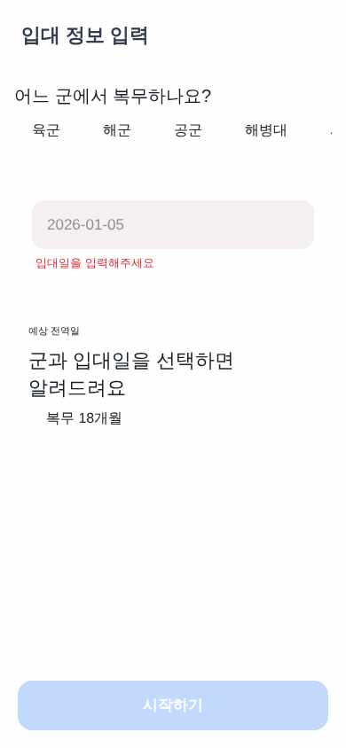
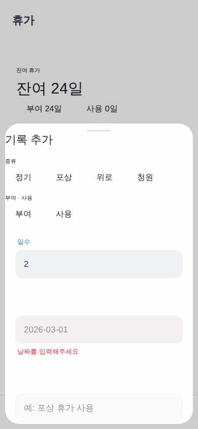
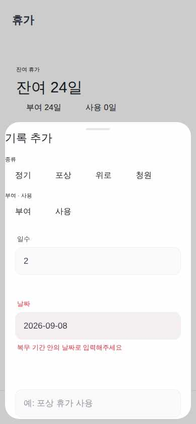
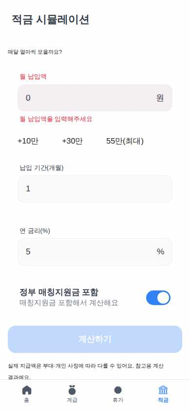
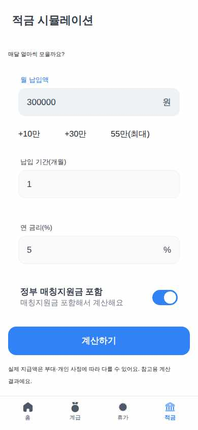

EnlistPay
가상 사용자 3명 중 1명 완주 · 2026-09-07 16:20
완주20세 남성, 입대 통지서를 막 받은 대학 휴학생. 스마트폰은 능숙하지만 참을성이 매우 낮아 화면을 3번 이상 탭해야 하면 이탈한다. 설명 문구는 거의 읽지 않고 큰 숫자와 버튼만 보고 진행한다. 라이트모드 기본값 그대로 사용.
과업 온보딩에서 군별(육군)과 입대일만 입력해 홈에서 자신의 전역일과 D-day를 확인한다.

1 "육군" 탭 → 성공

2 "입대일"에 "2026-01-05" 입력 → 성공(드라이버 보정: nearby-fallback — 앱 결함 아님)

4 완주 선언
심사: 홈 화면에 '전역일 2027년 7월 4일 (일)'이 표시되어 기대값 2027-07-04와 표기 차이만 있을 뿐 일치함.
4스텝 · 드라이버 보정 입력 1회(라벨 폴백·날짜 정규화 — 앱 결함 아님)
미완주54세 남성, 아들의 복무를 대신 관리해주는 자영업자. 글자를 하나하나 천천히 읽고 확신이 없으면 뒤로가기를 눌러 이전 화면을 다시 확인한다. 앱 사용은 가능하지만 입력 후 '정말 저장됐는지' 재확인하는 습관이 있다. 다크모드는 눈이 어지러워 쓰지 않는다.
과업 아들이 받은 포상휴가 2일을 휴가 기록으로 부여 등록하고, 뒤로갔다 다시 들어와도 기록이 남아 있는지 확인한다.

2 "입대일"에 "2025-01-06" 입력 → 성공(드라이버 보정: nearby-fallback — 앱 결함 아님)

5 "첫 기록 추가하기" 탭 → 성공

7 "날짜"에 "2026-09-08" 입력 → 성공(드라이버 보정: nearby-fallback — 앱 결함 아님)

8 "날짜"에 "2025-07-06" 입력 → 성공(드라이버 보정: nearby-fallback — 앱 결함 아님)
심사: 동작 이력상 '포상' 탭 진입이 두 차례 모두 실패(요소를 못 찾음)했고, 화면 증거(이미지)도 '아직 휴가 기록이 없어요' 상태로 휴가 기록이 전혀 저장되지 않았음을 보여준다. type=REWARD, direction=GRANT, days=2, da
- 🔴 [dead_end · 스텝 9] 동작 실패: 포상
- 🔴 [dead_end · 스텝 10] 동작 실패: 포상
10스텝 · 화면만 보고 못 찾아 DOM 목록으로 구조된 스텝 3회 · 드라이버 보정 입력 4회(라벨 폴백·날짜 정규화 — 앱 결함 아님)
미완주29세 남성, 예비역 출신 백엔드 개발자. 계산 앱은 일단 의심하고 본다. 입력칸에 빈 값·0·-5·9999999 같은 경계값을 일부러 넣어 검증 메시지와 클램프 동작을 확인한 뒤에야 정상값을 넣는다. 항상 시스템 다크모드로 사용하며 색 대비 깨짐도 함께 본다.
과업 적금 시뮬레이션에서 이상 입력(빈 값·0·음수·상한 초과)이 막히는지 확인한 뒤 정상값으로 만기 총액을 계산한다.

1 "육군" 탭 → 성공

6 "월 납입액"에 "-5" 입력 → 성공(드라이버 보정: nearby-fallback — 앱 결함 아님)

7 "월 납입액"에 "9999999" 입력 → 성공(드라이버 보정: nearby-fallback — 앱 결함 아님)

9 "납입 기간(개월)"에 "12" 입력 → 성공(드라이버 보정: nearby-fallback — 앱 결함 아님)
심사: 최종 화면은 월 300,000원·12개월·연 5.0% 기준으로 원금 3,600,000원, 이자 97,500원, 정부매칭 3,600,000원, 총액 7,297,500원을 표시함. 기대값(원금 5,400,000원, 이자 213,750원, 매칭 5,400,
- 🟡 [visual_bug · 스텝 8] 9999999(상한 초과) 입력 시 값이 클램프되지 않고 10000000으로 표시된 채 '월 납입액은 550,000원 이하로 입력해주세요' 경고만 뜸 — 입력값이 상한을 초과한 상태로 필드에 남아 있음
11스텝 · 드라이버 보정 입력 6회(라벨 폴백·날짜 정규화 — 앱 결함 아님)
각 화면은 가상 사용자가 그 다음 동작을 정하기 직전에 본 것이다. 캡션은 그 화면에서 실제로 한 동작이다. 마지막 장이 성공/실패 판정의 근거다. 화면을 누르면 원본 크기로 열린다.
브라우저에서 돌린 결과라 토스 SDK(로그인·결제·햅틱)는 비활성이다 — UI와 흐름만 판단 대상이다.
{kind=link}
{kind=link}
{kind=link}
{kind=link}
{kind=link}
{kind=link}
{kind=link}
{kind=link}
{kind=link}
{kind=link}
{kind=link}
{kind=link}
{kind=link}
{kind=link}
{kind=link}